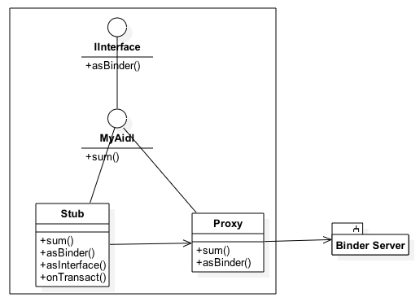
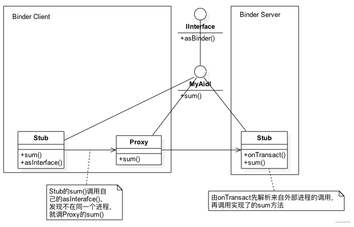

注意，Client和Server是相对的。谁发消息，谁就是Client，谁接收消息，谁就是Server。 举个例子，两个进程A和B之间使用Binder通信，进程A发消息给进程B，那么这时候A是Binder Client，B是Binder Server；进程B发消息给进程A，那么这时候B是Binder Client，A是Binder Server
有人把ServiceManager比喻成电话局，存储着每个住宅的座机电话，还是很恰当的。张三给李四打电话，拨打电话号码，会先转接到电话局，电话局的接线员查到这个电话号码的地址，因为李四的电话号码之前在电话局注册过，所以就能拨通；没注册，就会提示该号码不存在。
对照着Android Binder机制，对着上面这图，张三就是Binder Client，李四就是Binder Server，电话局就是ServiceManager，电话局的接线员在这个过程中做了很多事情，对应着图中的Binder驱动
我们看到，Client想要直接调用Server的add方法，是不可以的，因为它们在不同的进程中，这时候就需要Binder来帮忙了。
1 首先是Server在SM(ServiceManager)这个容器中注册。
2 其次，Client想要调用Server的add方法，就需要先获取Server对象， 但是SM不会把真正的Server对象返回给Client，而是把Server的一个代理对象返回给Client，也就是Proxy。
3 然后，Client调用Proxy的add方法，SM会帮他去调用Server的add方法，并把结果返回给Client。
1 aidl sub-folder --> MyAidl.aidl , define methods ( e.g. sum() ) in the interface file
2 build --> AS will create --> MyAidlInterface extends android.os.IInterface
with methods defined in MyAidl.aidl plus throws ( e.g. sum() throws RemoteException )
MyAidlInterface contains 2 inner classes
MyAidlInterface.Stub --> (for the client side)
public static abstract class Stub extends android.os.Binder implements XXXX.MyAidlInterface
** an inner abstract class named Stub that extends Binder and implements methods from your AIDL interface. You must extend the Stub class and implement the methods.
MyAidlInterface.Stub.Proxy --> (for the server/service side)
private static class Proxy implements XXXX.MyAidlInterface
proxy has field --> private android.os.IBinder mRemote; -->proxy needs to call remote Stub class
3 expose binder to obtain proxy
( in onServiceConnected() callback )
proxy= MyAidlInterface.Stub.asInterface( remote_service ) ;
当我们自定义一个aidl文件时（比如MyAidl.aidl，里面有一个sum方法），Android Studio会帮我们生成一个类文件MyAidl.java，如下图所示：

MyAidl.java这个生成文件中，包括MyAidl接口，以及Stub和Proxy两个实现了MyAidl接口的类，其中Stub是定义在MyAidl接口中的，而Proxy则定义在Stub类中。
我曾经很不理解，为什么不是生成3个文件，一个接口，两个类，清晰明了。都放在一个文件中，这是导致很多人看不懂AIDL的一个门槛。
其实Android这么设计是有道理的。当有多个AIDL类的时候，Stub和Proxy类就会重名，把它们放在各自的AIDL接口中，就必须MyAidl.Stub这样去使用，就区分开了。
对照这张图，我们继续来分析，Stub的sum方法是怎么调用到Proxy的sum方法？然后又调用另一个进程的sum方法的？

起决定意义的是Stub的asInterface方法和onTransact方法。其实这个图没有画全，把完整的Binder Server也画上，就应该是这样：
1 先从Client看起，对于AIDL的使用者，我们这么写程序：
MyAidl.Stub.asInterface(某IBinder对象).sum(1, 2); //最好在执行sum方法前判空。
asInterface方法的作用是判断参数——也就是IBinder对象，和自己是否在同一个进程：
是，则直接转换、直接使用，接下来就跟Binder跨进程通信无关啦；
否，则把这个IBinder参数包装成一个Proxy对象，这时调用Stub的sum方法，间接调用Proxy的sum方法。
return new MyAidl.Stub.Proxy(obj);
2 Proxy在自己的sum方法中，会使用Parcelable来准备数据，把函数名称、函数参数都写入_data，让_reply接收函数返回值。最后使用IBinder的transact方法，把数据就传给Binder的Server端了。
mRemote.transact(Stub.TRANSACTION_addBook, _data, _reply, 0); //这里的mRemote就是asInterface方法传过来的obj参数
3 Server则是通过onTransact方法接收Client进程传过来的数据，包括函数名称、函数参数，找到对应的函数，这里是sum，把参数喂进去，得到结果，返回。
所以onTransact函数经历了读数据-->执行要调用的函数-->把执行结果再写数据的过程。
---------------use "& lt;" for "<" -------------------
<pre class="prettyprint">...</pre>
----------------------------------------------------
public List<List<Integer>>